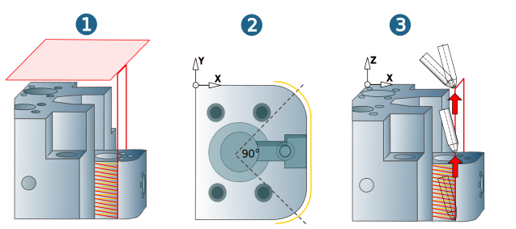

Setup
Model
|
Specify the model (milling area) required for the current job. Multiple allowances: If the milling area contains groups with different allowances, these allowances are taken into account during machining if the function is enabled. |
|
|
Additional surfaces: Temporary safety surfaces to avoid unnecessary rapid travel movements. Surfaces in the machining area that need to be known to perform a correct collision check. |


Check tool
The tool check ensures that all of the components defined for the tool are protected from a possible collision with the CAD model on the basis of existing material. The tool check is only available if you have defined a tool and also a model to be checked.
Check on: You must always enable this option if you want the tool to be checked for collisions. If the tool check is not enabled, the tool used is shown in red in the graphic preview. When this check is enabled, the defined clearance is used to check all of the components defined for the tool. We recommend that you define the clearance so that it gets continuously larger, starting with the thick shank in the direction of the spindle.
Tool check setup: the tool check settings are specified in this dialog box. For further information, see section Tool check setup
For unresolvable collision
Unresolvable collisions can occur if a collision involving the Extension, Holder and/or the Spindle cannot be resolved by Extending the tool (see calculating the tool length) or a collision occurs with the thick shank.
If a collision cannot be avoided by calculating the tool length, the following options are available:
Stop: The toolpath calculation stops when a collision occurs (applies for all machining strategies).
Clip: The toolpath is fully calculated. Only the collision-free areas of the toolpaths are output. As a result of rework machining with another tool and/or another tool inclination, the toolpaths found in the collision can be tracked and checked for collisions (applies to all 3D machining strategies).
The toolpaths calculated for the Clip option are used as the basis for the 3D Rework Machining cycle.
Linking movement
Define the parameters for the linking movements between machining jobs with different frames.
Distance angle limit: Difference of angle value for different tool inclinations between two separate machining areas (for example: drilling groups) of a model.
If the defined value (default = 91°) is exceeded or it is equal to the defined value, the linking movement between the two machining areas takes place at the height of the clearance plane, even if Clearance distance is defined as the retract mode (Parameters dialog page) (1).
If the angle value falls below the defined value, the linking movement takes place at the height of the clearance distance (dialog page: Parameters) (2). If there is no angle change, the tool moves rapidly to clearance distance. If there is no angle change, the tool moves rapidly to clearance distance.
Clearance straighten angle: If the angle between the Z axis of the current machining frame and Z axis of the tool is greater than the defined Straighten angle (default = 45°), the tool turns to the defined value for the Straighten angle, after it has reached the clearance plane.
If the angle between the Z axis of the current machining frame and Z axis of the tool is smaller than or equal to the defined Straighten angle, the tool moves to the clearance plane without changing the tool inclination (3).
|  |
The clearance straighten angle provides collision avoidance, in particular for machines with conical interpolation that allow a 180° vector change
Warning
The straighten angle must be defined so that the tip of the tool describes the deepest point of the entire collision body, including spindle and head. The Z axis of the frame must be parallel to the NCS Z axis!
Clearance feedrate: Linking movements between two machining areas in the clearance distance are executed at this feedrate.
Condition for retraction to clearance plane:
Clearance plane is defined as retract mode or the value for Clearance straighten angle is exceeded (as described above).
NC parameters
Machining tolerance: Enter the required machining tolerance. The value defines the accuracy with which the calculation for the generation of the toolpaths is carried out.
Maximum G1 length(1): maximum length of the G1 movements on planar surfaces which are output in the NC program. Greater distances are subdivided into a corresponding number of G1 movements of the specified length. Controlling the G1 length avoids too strong accelerations of the machine on large planar surfaces.
 |
Max. angle increment: Vector density for rapid movements at the clearance distance.
Stop before execution: A stop marker in the toolpath causes the tool to stop.
In addition to activating this function, go to the → dialog and enter the command to stop the tool (by means of M function or command chain). Open the Machine properties dialog via → → → → .